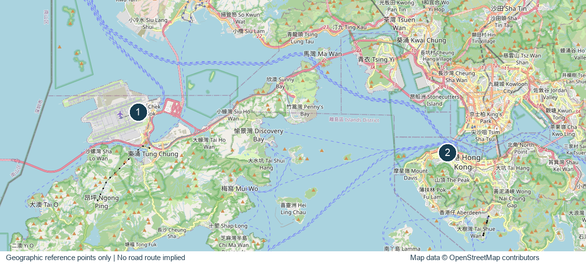

实践概况
随身查阅
联网打开后，将保存行程、图片及地图，供离线查阅。
首次使用请保持联网，看到“已保存，可离线查阅”后再关闭页面。
一、行程安排
每日行程
二、地点地图
参访地点位置
地图用于辨认楼宇和园区位置，图中编号不表示行车路线。

参考地图可离线查阅；实时导航需联网。
三、参访地点
地点介绍与交流要点
四、团员须知
行前准备与参访要求
团员应提前阅读行程及参访要求，携带必要证件，遵守团队纪律和接待单位规定。集合、入场及转场按领队安排执行。
上述外部网站及实时导航需联网。建议另将 PDF 保存到手机本地。
图片说明
本路书采用真实地点的往年照片，并作尺寸调整和适当裁切。照片保留原作者署名和使用许可；再利用时应遵守相应许可要求。